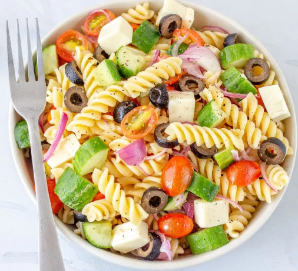
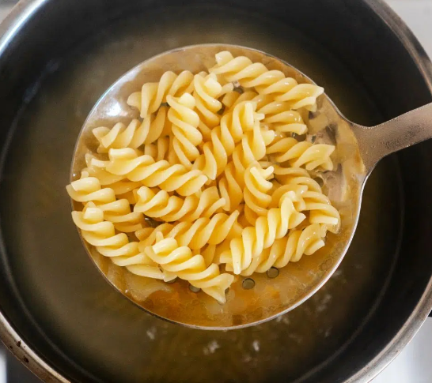

Ensalada de pasta

Indice
- Primer paso
- Segundo paso
- Ultimo paso
Ingredientes
- 250 gramos de pasta (penne, fusilli o la que prefieras)
- 1 taza de tomates cherry, cortados por la mitad
- 100 g de queso feta en cubos
- ½ taza de aceitunas negras, sin hueso
- 1 pepino grande, pelado y cortado en rodajas o cubos
- ¼ de cebolla en tiras
- ¼ taza de aceite de oliva
- 2 cucharadas de vinagre balsámico
- 1 diente de ajo picado
- ½ cucharadita de orégano seco
- Sal y pimienta al gusto
Receta
- Cocemos la pasta al dente

- Cocina la pasta en agua hirviendo con sal gruesa, siguiendo el tiempo indicado en el paquete hasta que esté al dente.
- Escúrrela y enjuágala con agua fría para detener la cocción.

- Preparamos los ingredientes para la ensalada de pasta
- Ponemos la pasta en un bol y preparamos el resto de ingredientes
- Cortamos los tomates cherry a la mitad, los colocamos en un cuenco y sazonamos ligeramente.
- Agregamos el queso feta, las aceitunas negras troceadas, el pepino cortado en cubos, y la cebolla en tiras.
- Preparamos la vinagreta

- En otro recipiente pequeño, mezcla los ingredientes de la vinagreta hasta que estén bien combinados.
- Vierte la vinagreta sobre la ensalada de pasta y mezcla suavemente para cubrir todos los ingredientes.
- Dejamos en la nevera hasta el momento de servir.
Volver al menu